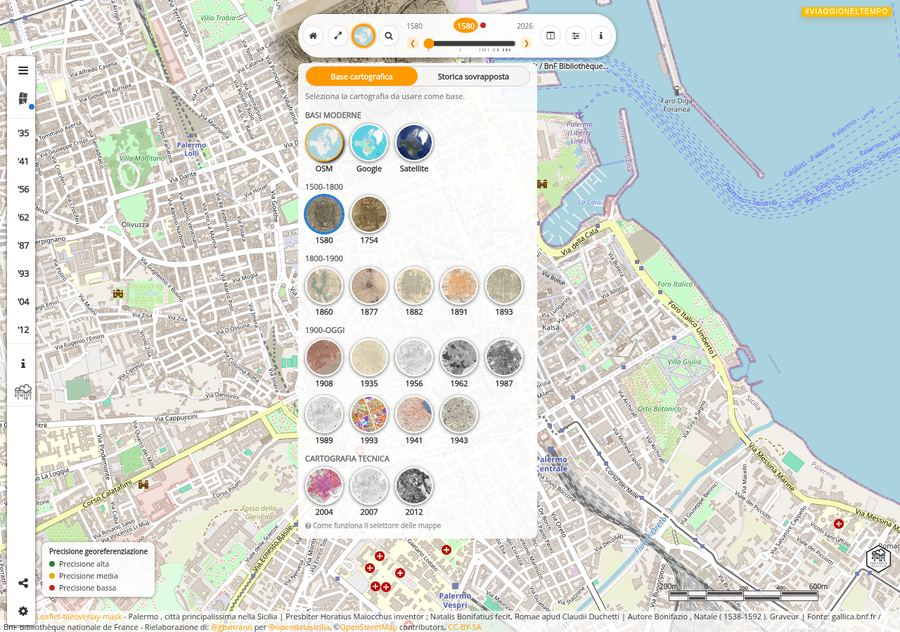
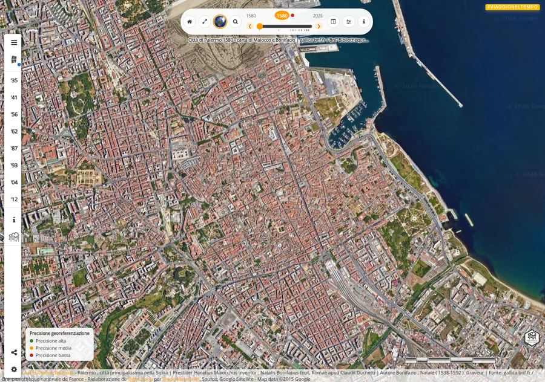
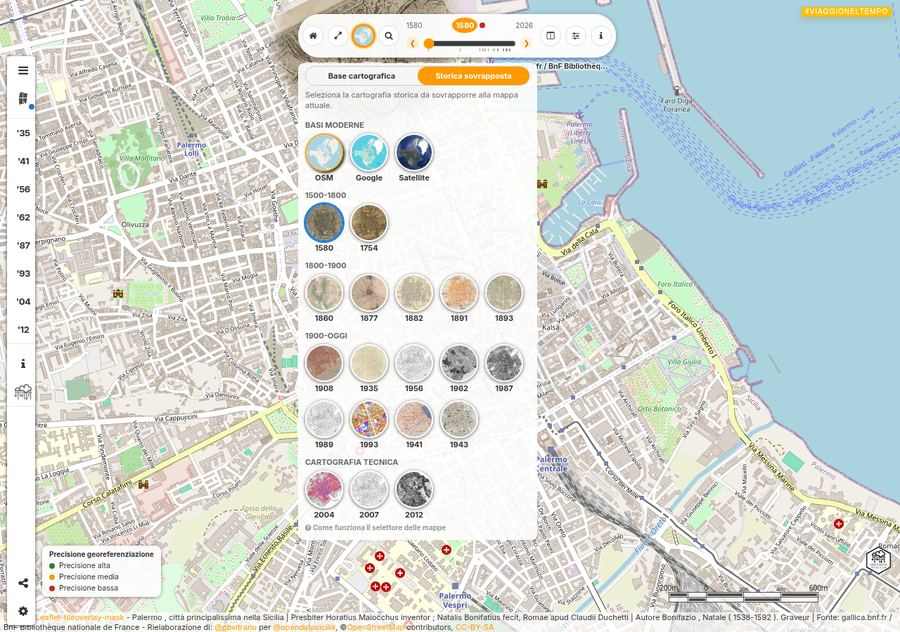
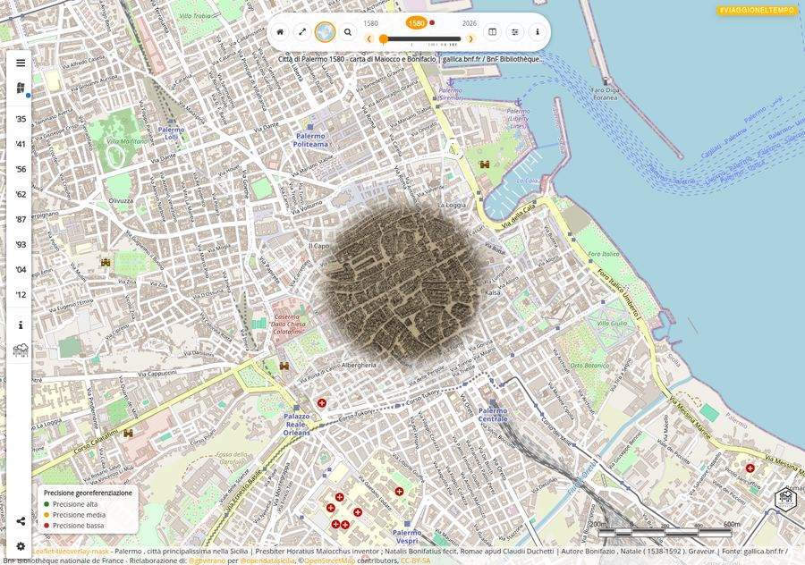
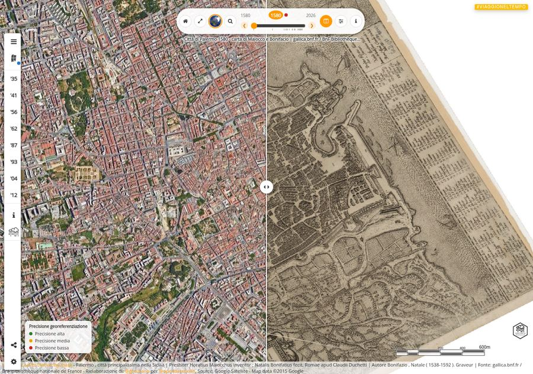
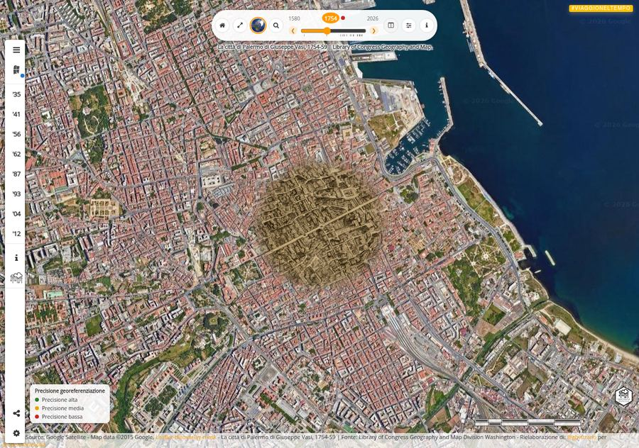
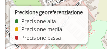
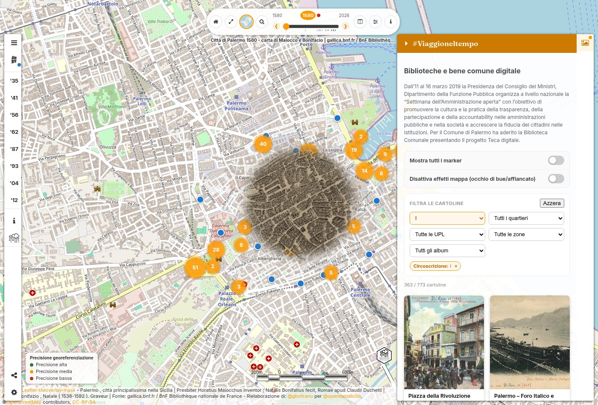
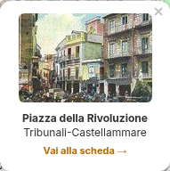

L'Atlante mostra il territorio di Palermo attraverso oltre 400 anni di cartografia: dalle incisioni cinquecentesche ai rilievi aerofotogrammetrici più recenti, sovrapposti alla mappa attuale per confrontare come la città è cambiata. Qui sotto tutte le modalità di visualizzazione, con un esempio reale per ciascuna.
Nel pannello del selettore mappe (icona con l'anteprima, in alto) scegli la tab Base cartografica: i cerchietti cambiano la mappa di sfondo attuale (OpenStreetMap, Google, Satellite). Nessuna mappa storica è sovrapposta.

Esempio con base Satellite attiva:

Tab Storica sovrapposta: i cerchietti sovrappongono una mappa storica alla mappa attuale con l'effetto "occhio di bue", un cerchio che segue il mouse e rivela cosa c'era in quel punto nel passato.

Esempio: carta di Palermo del 1580 sovrapposta a OpenStreetMap, con l'occhio di bue sul centro storico:

L'icona a colonne nella barra in alto, disponibile in modalità Storica sovrapposta, sostituisce l'occhio di bue con uno slider verticale trascinabile che divide lo schermo tra mappa storica e mappa attuale.

Sempre visibile nella barra in alto: trascinalo per scorrere velocemente tra tutte le mappe storiche in ordine cronologico, dal 1580 a oggi. La mappa e la sovrapposizione si aggiornano istantaneamente.

Il pallino colorato accanto al nome della mappa storica (e la legenda fissa in basso a sinistra) indica quanto è affidabile la sovrapposizione: verde = rilievo aerofotogrammetrico o cartografia tecnica moderna, buona corrispondenza; giallo = rilievo pre-aerofotogrammetria, corrispondenza approssimativa; rosso = disegno o incisione storica non rilevata scientificamente, sovrapposizione puramente indicativa. È un giudizio editoriale sulla fonte, non una misura: l'occhio di bue e lo swipe non vanno letti come pixel-perfect su queste mappe.

Nella sidebar a destra (icona con la cornice, in alto a destra della mappa) trovi oltre 770 cartoline e foto storiche di Palermo dalla Teca digitale della Biblioteca Comunale, pubblicate su Flickr con licenza aperta CC BY-SA 4.0. Ogni scheda mostra l'immagine, il quartiere e i dati territoriali; cliccandola si "gira" mostrando i dettagli completi sul retro.
I cinque menu a tendina (Circoscrizione, Quartiere, UPL, Zona, Album) sono interconnessi: scegliendo un valore, gli altri si aggiornano mostrando solo le opzioni ancora compatibili, cosi' non si arriva mai a una combinazione senza risultati. Ogni filtro attivo appare come etichetta rimovibile sotto i menu, e il bottone Reset li resetta tutti insieme.
Appena un filtro e' attivo (o si accende "Mostra tutti i marker"), le cartoline corrispondenti compaiono sulla mappa come pallini blu, raggruppati in cluster numerati dove sono vicine: un click su un cluster zooma per separarli, o li apre "a ventaglio" se lo zoom non basta. Cliccando un pallino si apre un'anteprima con link diretto alla scheda completa; dalla scheda, il bottone "Vedi sulla mappa" fa il percorso inverso, isolando quel marker e centrando la mappa su di esso.

L'anteprima al click su un marker:

Cliccando una scheda si gira e mostra sul retro tutti i metadati (autore, collocazione, luogo, album...) e il link "Apri la risorsa su Flickr", che porta alla pagina originale sul canale Flickr della Biblioteca Comunale di Palermo — utile per vedere la foto a piena risoluzione o il resto dell'album di provenienza.
Osservare il cambiamento di una città grazie alla cartografia: il caso di Palermo
Il bello di questa mappa è scoprire come questa città sia cambiata e ognuno troverà degli esempi diversi nei luoghi che conosce meglio.
La via Piersanti Mattarella, già “Via Villa Trabia” si estendeva da via Notarbartolo a poco dopo l’ingresso del CEI (l’istituto Gonzaga).

Il “Passo di Rigano” che costeggia Villa Sperlinga è un colpo d’occhio.

Era subito dopo Porta Felice e probabilmente se ne sentiva molto più forte la presenza.

...e ora scopri anche tu i cambiamenti nel tuo quartiere, …..buon viaggio nella storia cartografica della città di Palermo.
Supporto e tecnica di riproduzione: digitale numero fogli: 17
Comparazione tra carta tecnica OMIRA del 1935 con oggi.
L’effetto “occhio di bue” ci permette di vedere come era la città al tempo in un particolare punto.
Descrizione: cartografia realizzata col metodo aerofotogrammetrico “Nistri” dalla Soc. An. Ottico Meccanica Italiana e Rilevamenti Aerofotogrammetrici (O.M.I.R.A.) di Roma; committente è il Comune di Palermo che detiene le tavole originali a colori. L’orografia è rappresentata mediante curve di livello (equidistanza m 5) e punti quotati. Il sistema cartesiano di riferimento è di tipo locale ed ha come origine il punto trigonometrico di 2° ordine “La Martorana” di piazza Bellini.
Dal libro Repertorio cartografico & aerofotografico - CRICD Palermo 01/03/2010
KML: Download KML file
Bibliografia:
REPERTORIO CARTOGRAFICO E AEROFOTOGRAFICO
CRicd - Centro regionale per l'inventario, la catalogazione e la documentazione dei beni culturali e ambientali.
Servizio Documentazione - Unità Operativa X - Aerofototeca
Stampa:
Priulla, Palermo 2010
Qui trovi il file pdf del libro Repertorio cartografico & aerofotografico - CRICD Palermo 01/03/2010
Quadro unione tavole al 5000
 |
 |
 |
|
|
|---|---|---|---|---|
 |
 |
 |
|
|
 |
 |
 |
|
|
 |
 |
 |
 |
|
 |
 |
 |
 |
 |
Supporto e tecnica di riproduzione: digitale numero fogli: 12
Comparazione tra carta tecnica IRTA del 1955 con oggi.
L’effetto “occhio di bue” ci permette di vedere come era la città al tempo in un particolare punto.
Descrizione: Al 1955 risalgono le riprese in bianco e nero effettuate dall’Istituto Rilievi Terrestri Aerei di Milano (IRTA) e conservate dalla C.G.R. di Parma da cui l’Aerofo-toteca.
La cartografia è composta da 4296 fotogrammi in bianco e nero, riprodotti sia su supporto cartaceo che digitale, che rappresentano gran parte delle province di Palermo, Trapani e Agrigento. Queste immagini, riprese sia ad alta che a bassa quota, documentano nitidamente una vasta porzione di territorio siciliano prima delle grandi trasformazioni urbanistico-edilizie intervenute a partire dagli anni ’60.
Negli anni Ottanta, ha acquisito i fotogrammi comprendenti l’area della città di Palermo; è un volo di straordinario interesse in quanto documenta, con grande nitidezza e ricchezza di dettaglio, la città ed il territorio nel momento precedente la grande espansione urbanistico-edilizia.
Dal libro Repertorio cartografico & aerofotografico - CRICD Palermo 01/03/2010
KML: Download KML file
Bibliografia:
REPERTORIO CARTOGRAFICO E AEROFOTOGRAFICO
CRicd - Centro regionale per l'inventario, la catalogazione e la documentazione dei beni culturali e ambientali.
Servizio Documentazione - Unità Operativa X - Aerofototeca
Stampa:
Priulla, Palermo 2010
Qui trovi il file pdf del libro Repertorio cartografico & aerofotografico - CRICD Palermo 01/03/2010
")
Supporto e tecnica di riproduzione: digitale numero fogli: 14
Comparazione tra carta tecnica SAS del 1987 con oggi.
L’effetto “occhio di bue” ci permette di vedere come era la città al tempo in un particolare punto.
Descrizione: Cartografia realizzata nel 1987 dalla SAS, Società Aerofotogrammetrica Siciliana di Palermo.
KML: Download KML file
")
PRG aggiornato con i provvedimenti del d.p.r.s. n 110/a del 28/06/1962 e con le successive varianti fino a giugno 1984.
L’effetto “occhio di bue” ci permette di vedere come era la città al tempo in un particolare punto.
 |
 |
||
 |
 |
||
 |
 |
||
 |
 |
 |
|
 |
 |
 |
|
N. B. Le tavole sono in formato JPG, frutto di scansione delle tavole cartacee.
Norme Tecniche di attuazione (NTA)
Legenda PRG 1962
Download rectified GeoTiff
WMS Capabilities URL
Tiles (Google/OSM scheme)
Download KML file
Fonte dati: Comune di Palermo - Portale Opendata - Urbanistica - Licenza CC BY 4.0 IT
Grazie a @napo per la segnalazione delle mappe d'Italia del 1941 negli archivi online della University of Texas Libraries | The University of Texas at Austin sezione Perry-Castañeda Library Map Collection | Italy Maps con licenza Public Domain
Descrizione: Nell'archivio online dell'University of Texas Libraries | The University of Texas at Austin si trovano molte mappe prodotte dalla US Central Intelligence Agency, se non diversamente indicato, di diverse città italiane del 1940 (circa). Le scale variano dal 1:500k a 1:5k

- Italy City Plans 1943-1944 U.S. Army Map Service
KML: Download KML file
#opendatasicilia è una iniziativa civica che si propone di far conoscere e diffondere la cultura dell’open government e le prassi dell’open data nel nostro territorio e aprire una discussione pubblica partecipata.
Siamo un gruppo di cittadini con diverse storie, competenze, professioni. Siamo accomunati dalla genuina volontà di contribuire a migliorare la qualità della vita della nostra comunità. Lo vogliamo fare con spirito di collaborazione e concretezza.
 |
Ci trovi in questi luoghi:

Libro consigliato:
Le città nella storia d'Italia | Palermo di Cesare De Seta e Leonardo Di Mauro - Editori Laterza.
La morfologia primo del territorio. L'insediamento punico. La città romana e bizantina.
La città islamica: le moschee, le fortezze, i bagni e i mercati. Età normanno sveva e le nuove scelte urbanistiche. Splendore e decadenza durante il regno di Federico II. Le grandi famiglie feudali del XIV e XV secolo. Le attività economiche e la vita culturale nel viceregno aragonese.
Il viceregno spagnolo, la Controriforma e lo sviluppo dell'edilizia religiosa.
Il riformismo settecentesco. La dominazione sabauda e quella austriaca. Le ville extra-urbane e i giardini. La restaurazione ottocentesca. I moti del '48 e l'Unità.
I nuovi piani. Ernesto Basile e la città dei primi decenni del Novecento.
Sono disponibili i file KML per visualizzare le mappe con Google Earth o con programmi simili.


“Palermo Città principalissima nella Sicilia, dotata non solo della fertilità et vaghezza naturale del sito, ma d’un sicurissimo porto aiutato dall’arte, di edifitii stupendi tanto publici come privati et d’altre cose notabili che si richiedano per imbellire ogni gran città, poi che dall’Eccellenza Vostra Ill. ma ha ricevuta la bella Strada detta della Colonna, et vivendosi hora sotto il suo regimento in ta[n]ta felicità, ben conviene che havendo io da mandare in luce il suo disegno, lo dedichi come faccio all’Ecc.za V.ra; la supplico quindi si degni haver grato questo mio picciol dono, per la generosità dell’animo suo mentre humilmente la reverisco et megl’inchino”.
È, da parte dell'editore, la dedica al vicerè Marcantonio Colonna della prima vera carta topografica stampata della Città, compilata da Orazio Maiocco, incisa da Natale Bonifacio ed edita a Roma da Claude Duchet (o Claudio Duchetti) nell’anno 1580.
Pur con modifiche ed integrazioni, essa fornì (dapprima direttamente, poi soprattutto tramite le sue riproduzioni) un modello ripetutamente utilizzato per parecchi decenni, perfino quando l’apertura della Strada Maqueda, detta “Nuova”, aveva reso l’opera troppo vistosamente datata. Tra coloro che ne “beneficiarono”, per citare i più noti, Matteo Florimi (quasi sicuramente il primo in assoluto), molto presto seguito da Mario Cartaro e, qualche anno dopo, da Georg Braun e Frans (o Franz) Hogenberg.
È qui proposta una ristampa romana del 1602, opera di Giovanni Orlandi, un libraio, incisore e tipografo che acquisì il possesso di molti “rami” (cioè matrici incise in rame) già di proprietà del Duchetti. Si può notare sulla carta l’aggiunta “Joannes Orlandi formis romae 1602” nel bel mezzo della dicitura originale sugli artefici del 1580.
Descrizione di: Piero Genova per il Gruppo Palermo di Una Volta
KML: Download KML file

È un disegno ad inchiostro di china tratto dall’atlante Descrittione del Regno di Sicilia e sue isole coadiacenti…, opera manoscritta ed illustrata dal Tenente di Mastro di campo Gabriele Merelli.
L’atlante, una raccolta cartografica ad uso militare (ma in realtà, come era d’uso all’epoca, comprendente altro, soprattutto descrizioni mitico-storiche dei luoghi), è conservato presso la Biblioteca Francisco de Zabálburu di Madrid.
La rappresentazione non manca di aspetti approssimativi, soprattutto riguardo alla viabilità interna dei Quattro Mandamenti, risultando invece piuttosto accurata (in pochi ma abili tratti di inchiostro) per alcuni degli edifici notabili, come ad esempio Porta Felice.
In mancanza di una legenda Merelli propone, limitatamente al territorio extramurario, diversi toponimi vergati sulla mappa. Una curiosità: al centro del piano della Marina è disegnata quella che si può ritenere, ben poco equivocabilmente dato il sito, una (doppia) forca.
Descrizione di: Piero Genova per il Gruppo Palermo di Una Volta

“La Città di Palermo, capo e regia della Sicilia in cui risiede il Vicerè, che governa il Regno a nome della Maestà di Carlo III Borbone Infante delle Spagne Re di Sicilia, Napoli, Gerusalemme & c.”, carta disegnata e incisa a Roma da Giuseppe Vasi tra il 1754 e il 1759.
L'opera, monumentale nel suo genere, comprende anche nove splendide piccole vedute: una dell’intera città e le altre di via Toledo e delle piazze più importanti.
Descrizione di: Piero Genova per il Gruppo Palermo di Una Volta
KML: Download KML file

La carta, quasi certamente di produzione italiana (non riporta alcuna informazione relativa all'edizione), risale agli anni Sessanta dell’Ottocento.
L'indubbio modello è la carta, la prima dell'epoca post-unitaria, fatta redigere nel 1862 dal prefetto Torelli (grazie per la correzione ad Antonino D'Amico); ne riporta anche un clamoroso errore, “Piano degli Otto” per “Piano degli Orti”.
Rispetto al modello la rappresentazione è, fatto singolare, del tutto priva dei territori extramurari a sud e ad ovest; l’estensione verso nord è, in compenso, più ampia di quanto necessario per comprendere il porto.
Un aspetto interessante per una carta generale della città (ma non inedito: è presente in particolare nella “Pianta geometrica” del Villabianca, 1777), è la presenza del “colore bleu (che) corrisponde alle parti della città le quali fino alla seconda metà del 12° secolo erano occupate dal mare”.
Ultima annotazione: le vie della città murata sono indicate con un numero, ma il file che ho disposizione non contiene la relativa legenda.
Descrizione di: Piero Genova per il Gruppo Palermo di Una Volta
KML: Download KML file

La mappa non riguarda la sola città di Palermo ma un territorio molto più vasto, con l'intera Conca d'Oro e dintorni. “Palermo Bay” (con all’interno, in una scala di tre volte maggiore, “Port of Palermo”) è una splendida carta nautica inglese del 1877 (con “correzioni” fino al 1899), pubblicata dall’Ammiragliato britannico.
La ricchezza di particolari, che in questo genere di carte è più che altro limitata ai fondali marini ed alla linea costiera, qui è in un certo qual modo estesa anche all'entroterra (non mancando comunque le imprecisioni, in parte consistenti in fantasiose storpiature dei nomi, un classico delle carte straniere d’epoca). L’immagine intera è seguita da una serie (incompleta) di particolari.
N.B. Le quote sul livello del mare sono espresse in piedi (un piede equivale a 0,3048 metri) e le misurazioni dei fondali in braccia (un braccio equivale a sei piedi).
Descrizione di: Piero Genova per il Gruppo Palermo di Una Volta
KML: Download KML file

È la "Nuova Pianta della Città di Palermo" nell'edizione del 1882, realizzata dai litografi Bizzarrilli & Sanzò per l’editore Luigi Pedone Lauriel.
Una carta di produzione interamente palermitana, con una grafica sicuramente più “spartana” rispetto ad altre dell’epoca, mancando ad esempio una rappresentazione sistematica dei giardini.
D’altro canto, appare molto accurato l’elenco di voci descrittive, con una suddivisione per tipologia particolarmente varia (sono presenti tra gli altri gli “Istituti di educazione e di istruzione”, gli “Stabilimenti industriali”, gli “Istituti scientifici” ed un breve elenco di servizi “Pel viaggiatore”); tale caratteristica della pianta mi sembra molto compatibile con la sua natura di prodotto “a chilometro zero”. La tabella si conclude con una «Osservazione.
Le vie segnate con linee punteggiate sono quelle percorse dai Tramways».
Che erano i tram a cavalli, con sette linee ferrate attivate tra il 1878 e il 1881; la carta di Pedone Lauriel è la prima a riportare tale nuova rete di trasporto pubblico.
Descrizione di: Piero Genova per il Gruppo Palermo di Una Volta
KML: Download KML file

“Nuova Pianta della Città di Palermo”, litografia di Richter & C. (Napoli), editore Carlo Clausen (Palermo), 1891.
La carta ha la peculiarità di includere, con la stessa grafica di un elemento permanente, il complesso dell’Esposizione Nazionale (1891-92).
Descrizione di: Piero Genova per il Gruppo Palermo di Una Volta
KML: Download KML file
@aborruso, @piersoft, @cirospat e @gbvitrano
per Open Data Sicilia
Rielaborazione 2026:
Web app progettata e sviluppata da @gbvitrano in collaborazione con Claude AI (Anthropic) che ha affiancato le scelte architetturali, l'ottimizzazione del codice e lo sviluppo delle funzionalità di visualizzazione geospaziale.
Le cartografie storiche in dotazione al Comune di Palermo e presenti nel Portale Cartografico dalla società comunale in house per i servizi informatici SISPI SPA, sono state scansionate e georeferenziate dal Geometra Liborio Plazza del Comune di Palermo
Portale Cartografico a cura di: SISPI SPA
SiciliaHub/mappe: repo github in cui si trovano le mappa create dagli utenti della comunità OpenDataSicilia.it
Pianta della Città di Palermo e dintorni, redatta dall'Ufficio Tecnico Municipale - 19xx - scala 1:8000 - Fonte Map Warper - Uploaded by utente
Un ringraziamento particolare va a @napo che con il lavoro: mappa di Trento 1915 - da un libro di Cesare Battisti ci ha fatto riscoprire la bellezza e l'importanza delle mappa storiche.


{kind=link}